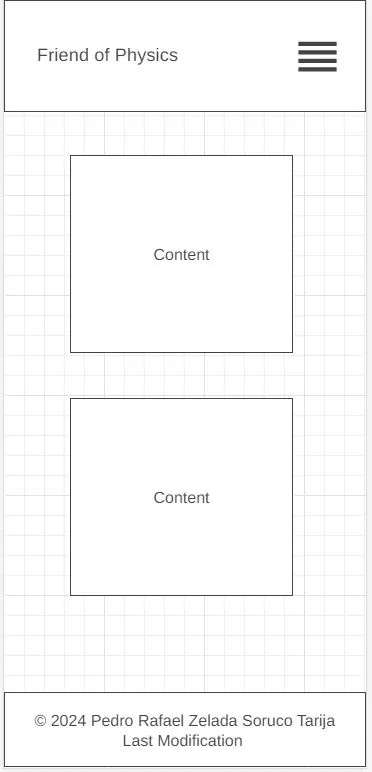
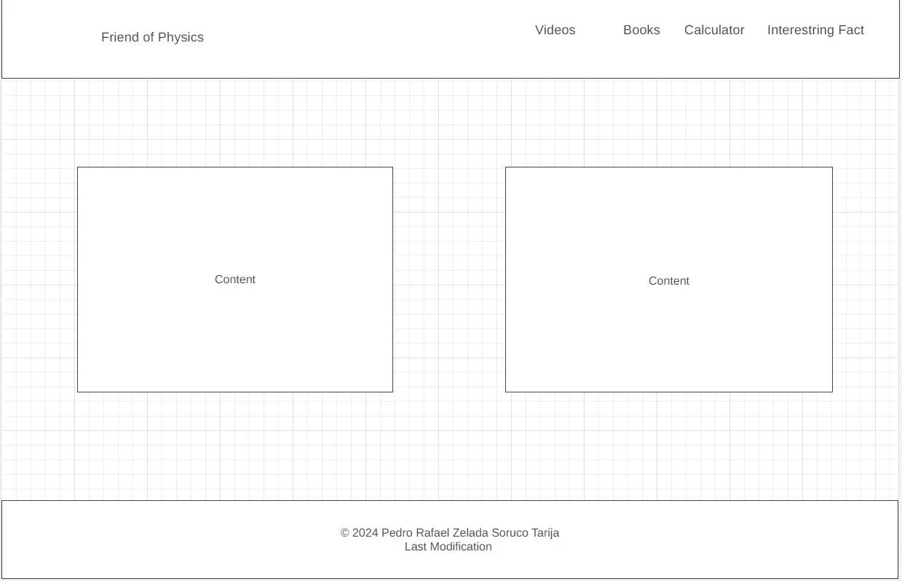

Site Name
Friend of Physics
This name represents a website dedicated to providing resources, guides, and tools for physics students who want to deepen their knowledge.
physicsfriend.org
Site Purpose
The site provides a comprehensive collection of resources for physics students, including book reviews, YouTube channel reviews, information on available online resources, and a calculator for basic motion operations.
Scenarios
Example: for Physics Student Hub
- Which physics books are best for understanding mechanics?
- What are some recommended YouTube channels for learning physics concepts?
Color Schema
Primary Color: #0073e6 - Used for headings.
Secondary Color: #004a99 - Used for background.
Typography
Heading Font: Georgia, serif
Body Font: Arial, sans-serif
Wireframe
Mobile View:
Desktop View:
